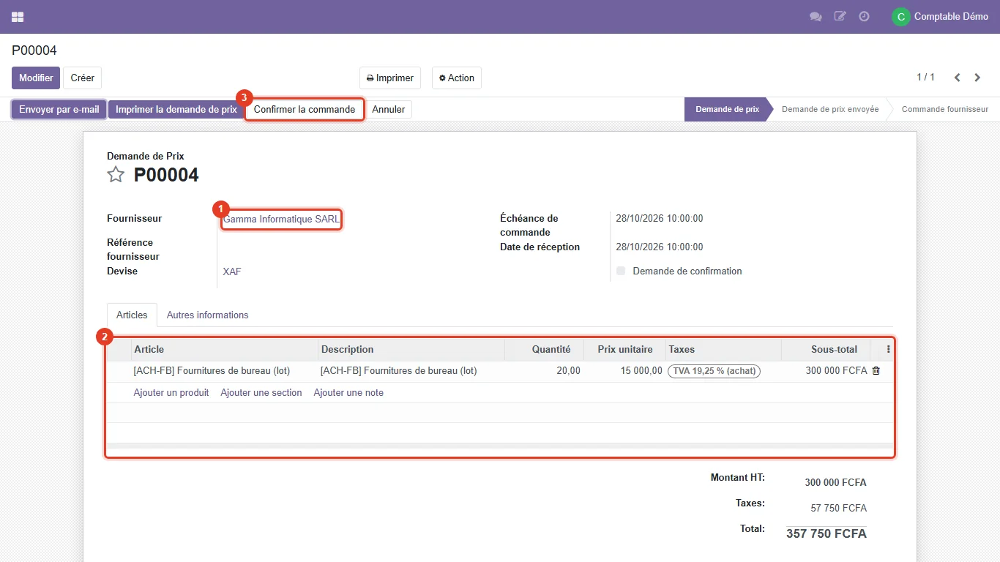
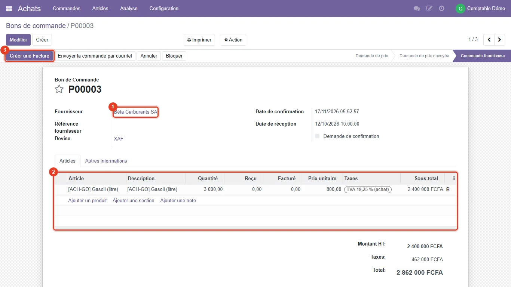

Objectif. Formaliser l'achat avant la facture.
Où dans Odoo 15Achats › Commandes › Demandes de prix


Ce que vous faites
- Créez une demande de prix : fournisseur (1), lignes (2) avec article, quantité, prix.
- Envoyez-la au fournisseur si besoin (Envoyer par courriel).
- À l'accord, cliquez sur Confirmer la commande (3) : la demande devient bon de commande.
À vérifier avant de continuer
0 / 2À éviter.
- Ne confirmez pas une commande non approuvée.
Exercice sur la base de test
Créez et confirmez une commande de 20 lots de fournitures.